건축설비산업기사 (2017-03-05 기출문제)
1과목: 건축일반
1. 교사의 배치형식에 관한 설명으로 옳지 않은 것은?
- 폐쇄형-대지의 효율성이 크다.
- 분산병렬형-소음에 유리하다.
- 집합형-동선이 짧아 학생 이동이 유리하다.
- 클러스트형-건물 사이 공간 활용성이 좋다.
(정답률: 74%)

2. 창호철물에 관한 설명 중 옳지 않은 것은?
- 경첩(hinge)은 문짝을 문틀에 달아 여닫는 축이 된다.
- 도어 스톱(door stop)은 열려진 문이 저절로 닫히게 하는 장치이다,
- 크레센트(crescent)는 오르내리창을 잠그는 데 쓰인다.
- 플로어 힌지(floor hinge)는 보통 경첩으로 유지할 수 없는 무거운 자재문에 사용한다.
(정답률: 84%)
3. 장소별 최적의 잔향시간에 관한 설명으로 옳지 않은 것은?
- 실의 사용목적과 실 용적에 의하여 최적의 잔향시간을 결정한다.
- 강연이나 연극이 이루어지는 실에서는 잔향시간을 비교적 짧게 한다.
- 음향설비를 이용하는 경우에는 잔향시간을 최적치보다 짧게 한다.
- 오케스트라나 뮤지컬 등 음악감상이 이루어지는 실에서는 잔향시간을 비교적 짧게 하여 명료도를 높인다.
(정답률: 74%)
4. 목구조에서 이음의 종류가 아닌 것은?
- 맞댄이음
- 겹친이음
- 안장이음
- 주먹장이음
(정답률: 61%)
5. 건축의 척도조정(modular coordination)에 관한 설명으로 옳지 않은 것은?
- 외관의 융통성 부여
- 설계작업의 단순화
- 건축구성재의 생산비용 절감
- 공기단축
(정답률: 84%)
6. 도서관의 기본계획에 대한 설명으로 옳지 않은 것은?
- 서고는 증축을 고려하여 계획한다.
- 서고는 화재에 대비하여 스프링클러설비를 설치한다.
- 증가하는 자료에 대비하여 모듈러 플래닝에 의한 확장성을 고려한다.
- 도서관에서는 원칙적으로 이용자, 관원의 출입구와 자료의 반입구 등을 별도로 계획한다.
(정답률: 88%)
7. 각 층의 바닥면적이 400m2인 12층 임대 사무소의 예상 수용인원으로 가장 적절한 것은? (단, 인당 면적은 8~11m2/인으로 계산)
- 240~400인
- 440~600인
- 640~800인
- 840~1000인
(정답률: 77%)
8. 호텔의 각 부분을 기능적으로 분류할 때 이에 속하지 않는 것은?
- 설비부분
- 숙박부분
- 공용, 사교부분
- 관리부분
(정답률: 82%)
9. 측창채광에 관한 설명으로 옳지 않은 것은?
- 구조와 시공이 용이한 편이다.
- 조도분포가 균열하여 넓은 실에 유리하다.
- 통풍 및 차열에 유리하다.
- 개패와 조작이 용이하다.
(정답률: 72%)
10. 다음, 그림과 단면을 갖는 쪽매의 명칭은?
- 반턱쪽매
- 오늬쪽매
- 제혀쪽매
- 딴혀쪽매
(정답률: 75%)
11. 실내 환기 횟수의 정의로 옳은 것은?
- 환기량(m3/h)×실용적(m3)
- 환기량(m3/h)×실용적(m3)×2
- 환기량(m3/h)/실용적(m3)
- 실용적(m3)/환기량(m3/h)
(정답률: 72%)
12. 터미널호텔 종류에 속하지 않는 것은?
- 공항호텔(Airport hotel)
- 부두호텔(Harbor hotel)
- 철도역호텔(Station hotel)
- 해변호텔(Beach hotel)
(정답률: 90%)
13. 아파트의 평면형식상의 분류에 속하지 않는 것은?
- 계단실형
- 편복도형
- 중복도형
- 메조넷형
(정답률: 85%)
14. 내부결로의 방지대책으로 옳지 않은 것은?
- 단열재를 가능한 벽의 내측에 설치
- 벽체 내부온도를 그 부분의 노점온도보다 높게 할 것
- 실내의 수증기 발생 억제
- 벽체 내부의 수증기압을 포화수증기보다 작게 할 것
(정답률: 77%)
15. 진열장의 조명에 관한 설명으로 옳지 않은 것은?
- 전반조명은 시계점, 귀금속점 등에 주로 사용된다.
- 국부조명은 강조할 필요가 있는 고가의 상품에 사용된다.
- 직접조명은 조명효율은 높으나 불쾌감을 준다.
- 반간접조명은 광선이 부드럽고 그림자를 만들지 않는 다.
(정답률: 80%)
16. 한식 지붕틀에 사용되는 부재가 아닌 것은?
- 동자기둥
- 대들보
- 토대
- 서까래
(정답률: 65%)
17. 사무소건축의 화장실 배치계획에 관한 설명 중 옳지 않은 것은?
- 각 층마다 공통의 위치에 둔다.
- 가능한 한 곳에 집중시킨다.
- 가급적 계단실이나 승강기실에서 멀리 떨어지도록 한다.
- 각 사무실에서 동선이 단순하게 구성되도록 한다.
(정답률: 85%)
18. 상하플랜지에 ㄱ형강을 쓰고 웨브재를 일정한 각도로 접합한 철골 조립보는?
- 판보
- 형강보
- 래티스보
- 허니컴보
(정답률: 73%)
19. 백화점 건축의 기둥간격 결정과 가장 거리가 먼 것은?
- 지하 주차장의 주차폭
- 매장의 면적
- 쇼 케이스 치수
- 에스컬레이터의 크기
(정답률: 57%)
20. 집합주거의 단지계획에 대한 설명으로 옳지 않은 것은?
- 단지 내에는 차량의 통과 동선을 계획하지 않는다.
- 단지 내의 도로는 가급적 긴 직선도로로 계획한다.
- 단지 내 도로에 따른 건축물의 적절한 시각적 변화를 주도록 한다.
- 단지 내 외부공간은 주민들이 소속감과 친근감을 느끼도록 계획한다.
(정답률: 78%)
2과목: 위생설비
21. 트랩이 구비해야 할 조건으로 옳지 않은 것은?
- 가능한 구조가 간단할 것
- 배수 시 자기세정이 가능할 것
- 유효 봉수깊이(50~100mm)를 가질 것
- 유수의 힘으로 가동부분이 열리고 유수가 끝나면 자동으로 닫히게 되는 구조일 것
(정답률: 72%)
22. 연면적이 10000m2인 사무소 건물에 필요한 1일당 급수량은? (단, 유효면적비율은 60%, 1인 1일당 급수량은 100L, 유효면적당 거주인원은 0.2인/m2 이다.)
- 12m3
- 20m3
- 120m3
- 200m3
(정답률: 72%)
23. 배관이음 부속에 관한 설명으로 옳지 않은 것은?
- 캡은 관의 끝을 막는 데 사용한다.
- 티는 관 도중에서 분기하는 데 사용된다.
- 엘보우는 관의 방향을 바꾸는 데 사용된다.
- 유니온은 지름이 다른 관을 직선으로 연결 하는 데사용된다.
(정답률: 81%)
24. 배수관의 관경을 결정할 때 기준이 되는 것은?
- 충고
- 급수량
- 배수관의 위치
- 단위시간당 최대 배수량
(정답률: 74%)
25. 온수를 열원으로 하는 간접가열식 급탕설비의 구성에 속하지 않는 것은?
- 팽창관
- 저탕조
- 증기트랩
- 온도조절 밸브
(정답률: 59%)
26. 오수정화시설에서 생물학적 처리방법 중 활성오니법에 속하는 것은?
- 장기폭기방법
- 접촉산화방법
- 살수여상방법
- 회전원판접촉방법
(정답률: 69%)
27. 주철관의 접합 방법에 속하는 것은?
- 나사 접합
- 용접 접합
- 납땜 접합
- 메커니컬 접합
(정답률: 71%)
28. 다음 중 압력탱크 급수방식에서 물 공급 순서로 가장 알맞은 것은?
- 상수도→압력탱크→펌프→저수조→위생기구
- 상수도→압력탱크→저수조→펌프→위생기구
- 상수도→저수조→펌프→압력탱크→위생기구
- 상수도→저수조→압력탱크→펌프→위생기구
(정답률: 69%)
29. 급탕설비에 관한 설명으로 옳지 않은 것은?
- 배관방식은 2관식과 3관식이 있다.
- 급탕방식은 국소식과 중앙식이 있다.
- 급탕순환방식은 중력식과 강제식이 있다.
- 중앙식 가열장치는 직접가열식과 간접가열식이 있다.
(정답률: 73%)
30. 배수∙통기배관에 관한 설명으로 옳지 않은 것은?
- 세탁기의 배수는 간접배수로 한다.
- 의료∙위생기기 등의 배수관에는 안전을 위해 2중으로 트랩을 설치한다,
- 청소구의 구경은 해당 배수관경과 동일한 관경으로 함을 원칙적으로 한다.
- 루프통기관은 기구 넘침면으로부터 150mm이상 입상시킨 다음 통기수직관에 연결한다.
(정답률: 66%)
31. 통기관의 관경 결정에 관한 설명으로 옳지 않은 것은?
- 각개통기관의 관경은 접속하는 배수관 관경의 1/2 이상으로 한다.
- 결합통기관의 관경은 통기수직관과 배수수직관 중 작은 쪽 관경의 1/2 이상으로 한다.
- 배수수평지관의 도피통기관 관경은 접속하는 배수수 평지관 관경의 1/2 이상으로 한다.
- 루프통기관의 관경은 배수수평지관과 통기수직관 중 작은 쪽 관경의 1/2 이상으로 한다.
(정답률: 51%)
32. 화재의 등급에 따른 소화기 표시색 및 화재의 종류의 연결이 옳지 않은 것은?
- A급 화제 - 백색 - 일반화재
- B급 화재 - 황색 - 유류화재
- C급 화재 - 청색 - 전기화재
- D급 화재 - 녹색 - 화학화재
(정답률: 77%)
33. 온수의 체적 팽창량을 구하는 식으로 옳은 것은?
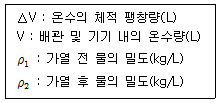
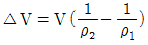
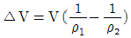
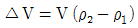
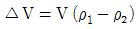
(정답률: 66%)
34. 가스사용시설에서 가스계량기와 전기계량기의 이격거리는 최소 얼마 이상으로 하여야 하는가?
- 15cm
- 30cm
- 60cm
- 90cm
(정답률: 79%)
35. 저수조에 물이 5m 높이까지 채워져 있을 경우, 수조 바닥면에서 받는 압력은?
- 약 0.5kPa
- 약 5kPa
- 약 50kPa
- 약 500kPa
(정답률: 65%)
36. 관내 유량을 구하는 공식 에서 d가 의미 하는 것은?
- 관경
- 유속
- 관 길이
- 마찰손실
(정답률: 83%)
37. 강관의 스케줄 번호와 관계있는 것은?
- 관의 외경
- 관의 내경
- 관의 두께
- 관의 길이
(정답률: 81%)
38. 세정밸브식 대변기에 관한 설명으로 옳은 것은?
- 연속사용이 가능하다.
- 일반 가정용으로 주로 사용된다.
- 급수관경이 최소 40A 이상 필요하다.
- 낙차에 의한 수압으로 대변기를 세척하는 방식이다.
(정답률: 77%)
39. 고가수조 급수방식에 관한 설명으로 옳지 않은 것은?
- 급수압력이 일정하다.
- 단수 시에도 일정량의 급수를 할 수 있다.
- 일반적으로 상향급수 배관방식이 사용된다.
- 저수시간이 길어지면 수질이 나빠지기 쉽다.
(정답률: 76%)
40. 다음은 옥내소화전설비에서 전동기 또는 내연 기관에 따른 펌프를 이용하는 가압송수장치에 관한 기준 내용이다. ( )안에 알맞은 것은?
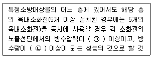
- ㉠ 0.17MPa, ㉡ 130L/miin
- ㉠ 0.17MPa, ㉡ 260L/miin
- ㉠ 0.34MPa, ㉡ 130L/miin
- ㉠ 0.34MPa, ㉡ 260L/miin
(정답률: 70%)
3과목: 공기조화설비
41. 다음과 같은 조건에서 교실면적이 480m2인 경우 조명기구(형광등)로부터의 취득열량은?
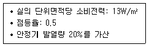
- 3372W
- 3744W
- 3925W
- 4120W
(정답률: 62%)
42. 덕트의 배치방식에 관한 설명으로 옳지 않은 것은?
- 수평덕트방식은 각개입상덕트방식에 비하여 덕트 스페이스를 적게 차지한다.
- 간선덕트방식은 주덕트인 입상덕트로부터 각 층에서 분기되어 각 취출구로 연결한다.
- 개별덕트방식은 입상덕트에서 각개의 취출구로 각개의 덕트를 통해 분산하여 송풍하는 방식 이다.
- 환상덕트방식은 2개의 덕트 말단을 루프(loop)상태로 연결함으로써 양쪽 덕트의 정압이 균일하게 된다.
(정답률: 59%)
43. 실내공기오염농도의 종합적 지표로서 CO2농도를 사용하는 가장 주된 이유는?
- CO2량은 측정하기가 쉬우므로
- CO2량에 비례하여 다른 오염농도로 증가되므로
- CO2량이 조금만 있어도 인체에 치명적인 해를 주므로
- CO2는 공기보다 밀도가 커서 실 바닥에 누적 되므로
(정답률: 79%)
44. 증기트랩 중 플로트 트랩에 관한 설명으로 옳지 않은 것은?
- 구조상 동결의 우려가 있는 곳에 적합하다.
- 증기해머에 의해 내부손상을 입을 수 있다.
- 다량 및 소량의 응축수를 모두 처리할 수 있다.
- 넓은 범위의 압력과 급격한 압력변화에도 원활히 작동한다.
(정답률: 68%)
45. 냉동기에 관한 설명으로 옳지 않은 것은?
- 냉동기 냉매의 증발온도는 응축온도보다 높아야 한다.
- 흡수식 냉동기는 압축식 냉동기보다 소음∙진동이 작다.
- 흡수식 냉동기는 흡수체로서 LiBr, 냉매로서 물을 사용한다.
- 압축식 냉동기 냉매는 압축→응축→팽창→증발의 순으로 순환한다.
(정답률: 54%)
46. 증기난방설비에 사용되는 플래시 탱크(flash tank)의 역할로 가장 알맞은 것은?
- 고온, 고압의 응축수로부터 재증발 증기를 회수 한다.
- 스팀보일러로부터 발생한 증기를 각 계통으로 분배한다.
- 환수주관보다 높은 위치에 진공펌프를 설치할 때 사용한다.
- 보일러의 저수위면이 안전수위 이하로 내려가는 것을 방지한다.
(정답률: 47%)
47. 냉방 시 벽체면적 30m2를 통해 취득되는 관류 열량은? (단, 벽체의 열관류율은 0.58W/m2∙K이고, 상당외기 온도차는 10℃이다.)
- 17.4W
- 34.8W
- 174W
- 348W
(정답률: 63%)
48. 용량이 386kW인 터보 냉동기에 1시간동안 순환되는 냉각수량은? (단, 냉각기 입구의 냉수온도 10℃, 출구의 냉수온도 5℃, 물의 비열 4.2kJ/kg∙K)
- 55.3m3/h
- 58.9m3/h
- 64.9m3/h
- 66.2m3/h
(정답률: 41%)
49. 습공기 선도에 표시되지 않는 공기의 상태값은?
- 비체적
- 열수분비
- 작용온도
- 수증기분압
(정답률: 49%)
50. 습공기의 엔탈피에 관한 설명으로 옳지 않은 것은?
- 현열은 온도의 변화에 따라 출입하는 열로 공기의 정압비열에 온도를 곱해서 구한다.
- 잠열은 상태의 변화에 따라 출입하는 열로 수증기의 증발잠열에 절대습도를 곱해서 구한다.
- 20℃일 때 건공기의 엔탈피를 100으로 하여 습공기 1kg이 지니고 있는 열량으로 나타낸다.
- 건조공기가 그 상태에서 가지고 있는 현열과 동일한 온도에서 수증기가 갖고 있는 잠열과의 합이다.
(정답률: 58%)
51. 대향류형 냉각탑과 비교한 직교류형 냉각탑의 특징을 설명한 내용 중 옳지 않은 것은?
- 팬 소요동력이 적다.
- 탑내 기류분포가 나쁘다.
- 구조상 점검∙보수가 용이하다.
- 설치면적이 적고 냉각효율이 높다.
(정답률: 55%)
52. 펌프에 관한 설명으로 옳지 않은 것은?
- 순환펌프로는 주로 원심식 펌프가 사용된다.
- 비속도가 작은 펌프는 양수량이 변화하여도 양정의 변화가 작다.
- 동일 특성의 펌프를 병렬 운전할 경우 실제로 유량이 2배 증가한다.
- 펌프의 실양정은 흡입측과 토출측의 수위와 펌프의 설치 위치에 따라 다르다.
(정답률: 60%)
53. 다음의 공조방식 중 중앙공조방식에 속하는 것은?
- 룸쿨러 방식
- 패키지 방식
- 팬코일 유닛 방식
- 멀티 유닛형 룸쿨러 방식
(정답률: 66%)
54. 냉각탑에서 응축기로 물을 보내기 위한 배관의 명칭은?
- 냉각수 공급관
- 냉각수 환수관
- 냉수 공급관
- 냉수 환수관
(정답률: 71%)
55. 냉방부하의 종류 중 현열과 잠열을 동시에 보유하고 있지 않은 것은?
- 인체부하
- 외기부하
- 조명기구부하
- 틈새바람부하
(정답률: 82%)
56. 틈새바람량의 산정 방법에 속하지 않는 것은?
- 틈새법
- 풍압법
- 면적법
- 환기횟수법
(정답률: 52%)
57. 환기방식에 관한 설명으로 옳지 않은 것은?
- 제3종 환기방식은 지붕에 설치된 모니터를 이용한다.
- 중력환기에 의한 환기량은 실내외 온도차에 비례한다.
- 치환환기는 실내 온도보다 낮은 온도의 공기를 이용하는 방식이다.
- 제2종 환기방식은 오염 공기의 침입을 방지 하거나 연소용 공기가 필요한 경우에 적합하다.
(정답률: 66%)
58. 다음 설명에 알맞은 보일러는?
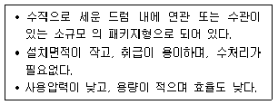
- 연관보일러
- 입형 보일러
- 수관 보일러
- 주철제 보일러
(정답률: 69%)
59. 장변의 길이가 1.2m이고 단변의 길이가 0.7m인 장방형 덕트 풍속 5m/s로 공기가 통과할 경우 송풍량은?
- 42m3/min
- 252m3/min
- 300m3/min
- 420m3/min
(정답률: 49%)
60. 습공기에 관한 설명으로 옳은 것은?
- 습공기를 가열하면 비체적은 감소한다.
- 습공기를 가열하면 엔탈피는 감소한다.
- 습공기를 가열하면 상대습도는 증가한다.
- 습공기를 가열해도 절대습도는 일정하다.
(정답률: 62%)
4과목: 건축설비관계법규
61. 다음의 소방시설 중 소화설비에 속하지 않는 것은?
- 포소화설비
- 연결살수설비
- 옥외소화설비
- 스프링클러설비
(정답률: 66%)
62. 공동주택의 거실에 설치하는 반자의 높이는 최소 얼마 이상으로 하여야 하는가?
- 1.8m
- 2.1m
- 2.7m
- 4.0m
(정답률: 77%)
63. 건축물의 피난∙방화구조 등의 기준에 관한 규칙에 따라 채광 및 환기를 위한 창문등이나 설비를 설치하여야 하는 대상에 속하지 않는 것은?
- 의료시설의 병실
- 공동주택의 거실
- 종교시설의 집회실
- 교육연구시설 중 학교의 교실
(정답률: 64%)
64. 비상용승강기 승강장의 바닥면적은 비상용 승강기 1대에 대하여 최소 얼마 이상으로 하여야 하는가? (단, 옥내에 승강장을 설치하는 경우)
- 5m2
- 6m2
- 8m2
- 10m2
(정답률: 79%)
65. 기계환기설비를 설치하여야 하는 다중이용시설 중 판매시설의 필요 환기량 기준은?
- 25m3/인∙이상
- 27m3/인∙이상
- 29m3/인∙이상
- 36m3/인∙이상
(정답률: 54%)
66. 판매시설로서 모든 층에 스프링클러설비를 설치하여야 하는 특정소방대상물의 수용인원 기준은?
- 200명 이상
- 400명 이상
- 500명 이상
- 1000명 이상
(정답률: 67%)
67. 아파트에 설치하여야 하는 대피공간에 관한 기준 내용으로 옳지 않은 것은?
- 대피공간은 바깥의 공기가 접할 것
- 대피공간은 실내의 다른 부분과 방화구획으로 구획될 것
- 대피공간의 바닥면적은 각 세대별로 설치하는 경우에는 최소 2m2 이상일 것
- 대피공간의 바닥면적은 인접 세대와 공동으로 설치하는 경우에는 최소 4m2 이상일 것
(정답률: 67%)
68. 건축법령상 다음과 같이 정의되는 용어는?
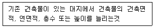
- 증축
- 개축
- 재축
- 대수선
(정답률: 82%)
69. 건축물의 에너지절약 설계기준에 따른 건축부문의 권장사항으로 옳지 않은 것은?
- 외벽 부위는 외단열로 시공한다.
- 공동주택은 인동간격을 넓게 하여 저층부의 일사 수 열량을 증대시킨다.
- 건축물의 체적에 대한 외피면적의 비 또는 연면적에 대한 외피면적의 비는 가능한 크게 한다.
- 건물의 창 및 문은 가능한 작게 설계하고, 특히 열손실이 많은 북측 거실의 창 및 문의 면적은 최소화한다.
(정답률: 75%)
70. 건축허가 등을 함에 있어서 소방본부장 또는 소방서장의 동의를 받아야 하는 대상 건축물 등에 속하는 것은?
- 항공관제탑
- 주차장으로 사용되는 바닥면적이 100m2인 층이 있는 건축물
- 무창층이 있는 건축물로서 바닥면적이 80m2인 층이 있는 것
- 승강기 등 기계장치에 의한 주차시설로서 자동차 10대를 주차할 수 있는 시설
(정답률: 76%)
71. 건축법령상 다음과 같이 정의되는 주택의 유형은?
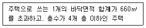
- 다중주택
- 연립주택
- 다가구주택
- 다세대주택
(정답률: 75%)
72. 문화 및 집회시설 중 공연장 개별관람석의 출구에 관한 설명으로 옳지 않은 것은? (단, 개별관람석의 바닥면적이 300m2 이상인 경우)
- 안여닫이로 할 것
- 관람석별로 2개소 이상 설치할 것
- 각 출구의 유효너비는 1.5m 이상일 것
- 개별관람석 출구의 유효너비의 합계는 개별 관람석의 바닥면적 100m2마다 0.6m의 비율로 산정한 너비 이상으로 할 것
(정답률: 71%)
73. 1급 소방안전관리대상물에 두어야 할 소방안전 관리자의 선임대상자에 속하지 않는 사람은?
- 소방설비기사의 자격이 있는 사람
- 소방설비산업기사의 자격이 있는 사람
- 소방공무원으로 7년 근무한 경력이 있는 사람
- 산업안전기사의 자격을 취득한 후 1년간 2급 소방안전관리대상물의 소방안전관리자로 근무한 실무 경력이있는 사람
(정답률: 71%)
74. 공사감리자가 필요하다고 인정할 경우 공사 시공자에게 상세시공도면을 작성하도록 요청할 수 있는 대상 건축공사 기준은?
- 연면적의 합계가 3000m2 이상인 건축공사
- 연면적의 합계가 5000m2 이상인 건축공사
- 연면적의 합계가 10000m2 이상인 건축공사
- 연면적의 합계가 20000m2 이상인 건축공사
(정답률: 53%)
75. 건축물의 용도변경과 관련된 시설군 중 영업 시설군의 세부 용도에 속하지 않는 것은?
- 판매시설
- 운동시설
- 업무시설
- 숙박시설
(정답률: 71%)
76. 피난안전구역의 설치에 관한 기준 내용으로 옳지 않은 것은?
- 피난안전구역의 높이는 2.1m 이상일 것
- 피난안전구역의 내부마감재료는 불연재료로 설치할 것
- 비상용 승강기는 피난안전구역에서 승하차할 수 있는 구조로 설치할 것
- 건축물의 내부에서 피난안전구역으로 통하는 계단은 피난계단의 구조로 설치할 것
(정답률: 48%)
77. 내화구조에 속하지 않는 것은? (단, 바닥의 경우)
- 철근콘크리트조로서 두께가 10cm인 것
- 무근콘크리트조로서 두께가 10cm인 것
- 철골철근콘크리트조로서 두께가 10cm인 것
- 철재의 양면을 두께 5cm의 철망모르타르로 덮은 것
(정답률: 65%)
78. 건축물의 설비기준 등에 관한 규칙에 따라 피뢰설비를 설치하여야 하는 대상 건축물의 높이 기준은?
- 10m 이상
- 20m 이상
- 30m 이상
- 40m 이상
(정답률: 78%)
79. 건축물의 에너지절약 설계기준상 다음과 같이 정의되는 용어는?
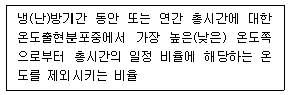
- 위험률
- 온도율
- 부분부하율
- 최대부하율
(정답률: 73%)
80. 각 층의 거실면적이 1500m2이고, 층수가 11층인 업무시설에 설치하여야 하는 승용승강기의 최소 대수는? (단, 15인승 승강기의 경우)
- 1대
- 2대
- 3대
- 4대
(정답률: 50%)